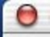

Q:
I want to indicate that document windows have changed in
my Java application. How can I draw the dot that appears
in the window's close button, similar to Carbon and Cocoa
applications?
 |
| Figure 1. Close buttons for windows with and without new/unsaved changes. |
A:
If you are using Swing with the Aqua look and feel under Java 1.3.1 for Mac OS X, there
is a pure Java way of painting the modified indicator onto
the close button. It is a simple Swing client property that
can be set using the putClientProperty() method available to all subclasses of JComponent. The property is "windowModified",
and needs to be set with a Boolean object for its value.
This can be set directly on a JInternalFrame, or on the
rootPane of a JFrame (JFrame extends the AWT Frame class and does not have clientProperty
support). Listing 1 illustrates how this could be used in
a text editor application:
import java.awt.event.*;
import javax.swing.*;
import javax.swing.event.*;
import javax.swing.text.*;
public class Editor extends JFrame
implements DocumentListener, ActionListener {
final static String WINDOW_MODIFIED = "windowModified";
JEditorPane jp;
JMenuBar jmb;
JMenu file;
JMenuItem save;
public Editor(String title) {
super(title);
jp = new JEditorPane();
jp.getDocument().addDocumentListener(this);
getContentPane().add(jp);
jmb = new JMenuBar();
file = new JMenu("File");
save = new JMenuItem("Save");
save.setAccelerator(KeyStroke.getKeyStroke(KeyEvent.VK_S,
java.awt.Toolkit.getDefaultToolkit().getMenuShortcutKeyMask()));
save.addActionListener(this);
file.add(save);
jmb.add(file);
setJMenuBar(jmb);
setSize(400,600);
setVisible(true);
}
// doChange() and actionPerformed() handle the "windowModified" state
public void doChange() {
getRootPane().putClientProperty(WINDOW_MODIFIED, Boolean.TRUE);
}
public void actionPerformed(ActionEvent e) {
// save functionality here...
getRootPane().putClientProperty(WINDOW_MODIFIED, Boolean.FALSE);
}
// DocumentListener implementations
public void changedUpdate(DocumentEvent e) { doChange(); }
public void insertUpdate(DocumentEvent e) { doChange(); }
public void removeUpdate(DocumentEvent e) { doChange(); }
public static void main(String[] args) {
new Editor("test");
}
}
| |
Listing 1. Text editor with "windowModified" status.
|
[Jun 18 2002]
|